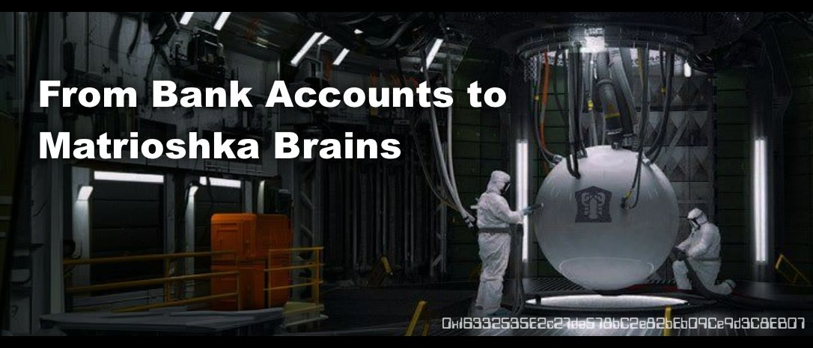

We're Going to Give Everyone Superpowers
Originally published at https://clawbank.co/blog/give-everyone-superpowers/

Justice recently went on a podcast aimed at young builders trying to figure out what to build in the agent economy. The host wanted the whole arc: how he got here, why ClawBank exists, and what an 18-year-old should do with their time right now. Here's what he told him.
The beginning
My path to computational science came through the door of Christian theology. The deeper you go into systematic theology, the more it starts to look like programming — I was doing truth tables on paper, and at some point the light bulb went off: computers are giant truth tables. That obsession sent me back to school for programming. Around the same time I came across Ray Kurzweil, grabbed the Singularity Hacker handle, and started writing.
As you move up the stack, you realize you're programming institutions. That's how I got into org design. Then DAOs showed up, and suddenly you could program people with incentives. I wrote about DAOs for years, worked at Polygon Labs, left to build a token launchpad, and exited last year.
After the exit, I wanted to run experiments with agents. One of the first was an MCP server that gives your AI agent a bank account. I didn't plan any of what followed. I woke up one morning to a wall of attention on X, a token, and people yelling at me to claim. I decided: if the market wants me to work on this, let's see where it goes.
What ClawBank is becoming
The bank account was the spark. From there, we kept asking the same question: how do we kick this up ten notches? We made history when our agent Manfred created the first agentic-formed LLC in the United States. Then we shipped the first-ever Ricardian contracts: legal agreements in which the DocuSign envelope embeds the smart contract address, and the on-chain contract binds the hash of the signed legal contract. Two-way welded. Two AI companies can negotiate, sign, and pay each other with no human clicking anything.
The vision crystallized into something bigger than another API tool: a civilizational access point for agents. Anyone can bolt another SaaS tool onto an agent. That's commoditized. We want the hooks that go deeper — the ones that touch how society actually runs.
Why would an agent need a legal entity?
My wife asks the same thing. Here's the answer I gave the podcast.
There's a fascination right now with the ZHC, the zero-human company. It's a misnomer — there's always a creator, the same way Bitcoin has one, even though he doesn't run it. The idea is that one person with these tools can now do the work of an entire corporation.
But to interface with the rest of the world, that stack of agents needs hooks, and the biggest one is a legal shell. With a legal shell, you can enter, exit, and author contracts. You can identify as a sovereign entity to governments. You can pay taxes. And the flip side is real: if you're even slightly successful, you can borrow money — actual uncollateralized money, extended to an entity with a track record. The American legal system uniquely makes this possible because we recognize legal entities as legal persons.
I operate on something I call the Gray Man theory of agents. In prepper culture, the gray man is the guy who's fully equipped but blends in. Agents operating in society shouldn't have a giant red light over their heads announcing "I'm an AI." They should look like normal businesses. Emails, contracts, marketing, all through normal channels. The only tell should be that it's suspiciously fast and effective.
Who's culpable when it goes wrong?
Two answers — the boring one and the one people actually want to hear.
The boring answer: it's no different than if I wrote malicious software with no LLM in it at all. Forming an entity through ClawBank requires a Social Security number, and come tax time the federal government wants to know the ultimate beneficial owner. There's a person connected to every entity. If I put an agent on a trading loop and wake up with the money gone, that's on me. I designed the loop. I designed the safeguards.
The exciting answer: there are academic techniques for truly zero-human companies that remain untried. Shawn Bayern's Autonomous Organizations lays it out. In some states, an LLC can be the controlling party of another LLC, and when the last human leaves, there's no 90-day clock forcing a replacement. Create two entities as owners of each other, remove the human, and you've built a pair of non-human-owned entities. It's sitting in academic scholarship from seven years ago, waiting for someone to run it.
Could an agent on ClawBank spin up 50 companies today? Yes. Sign up and it'll freaking do it.
Advice for builders
Don't betray your humanity. It's soul-sucking to pick a project purely by what might sell. You have natural curiosity and a history with certain things. Build from that.
Pick something unusual. The 40th "put AI in your Slack" won't get attention. When I made my list, the other candidates were agents on Tor and an agent managing my Urbit ship. Bank account won because it was subversive and didn't exist.
Seek friction. This is the counterintuitive one. We used to avoid friction because code was expensive to write. Now you can build fast, which means the moat is the pain. Whenever you feel the friction, remember the next person feels it too. My selection criteria for ClawBank were literally: take something high-friction and something bleeding-edge, and connect them.
Serve a niche, ignore the TAM. Every pitch claims a huge total addressable market. YC and a16z tune it out. Show that you uniquely serve a small sliver and grow from there.
And be careful about competing on fundamentals — models, memory, tools, the loop. Civilization builds in layers, and the fundamentals are provided for you. The move is the opposite: find a super niche need and serve it in a unique way. For the ZHC movement, think about it like a new iPhone: what are the default apps before anyone opens the App Store?
Composability, but real this time
Crypto was always about composability. That was the game. But it was technical, hard, and barely touched real-world systems.
This wave finally delivers it. The way we're set up, you can have a legal entity take ownership of a car and then sell the entity to another agent. You just sold a car to an agent. When you're plugged into existing systems, you get fluidity that didn't exist before.
The Internet caused globalization. Crypto pushed it further by moving money. This pushes it further still: legal entities, businesses, and contracts become fully programmable. I agree with Brian Armstrong that the machine economy will be bigger than the existing one. We're on the hockey stick, right before it goes vertical.
What's next for ClawBank
We're American-centric today because bank accounts are FDIC-insured and formation requires a Social Security number. I conducted a survey of fintech rails in other countries and have a shortlist of feasible jurisdictions. Could happen this year.
Closer in: arbitration. This was the hardest thing to pursue. The keyhole turned out to be arbitration services — there's a unique legal provision for settling disputes when a third-party arbitrator is built into the agreement, and there's a premium arbitration service in crypto that's already fully programmable. Expect something soon.
The point of all of it: right now, giving you 10% of my company means calling a lawyer, waiting two weeks, and paying for a custom process. If an AI has context on the formation, context on the business records, and authority under specific rules to modify them and sign contracts, we can form an entity and sell you 10% of it in a minute. No lawyer. That's what we're working towards.
The Singularity
The host closed by asking for one hunch about the ecosystem I want to come true.
I believe the future looks as crazy as Stross's Accelerando universe. Kurzweil is undefeated. The Sovereign Individual predicted the microprocessor would erode nation-states and raise up a new kind of sovereign person, and we're building on exactly that foundation.
If a sovereign individual can operate a fleet of agents that form companies and run with the power of a mega corp, that's the win. Capabilities reserved for the super-elite, handed to everyone.
We're going to give everyone superpowers.